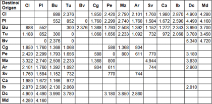
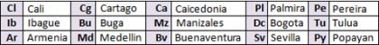

Términos y Condiciones
Expreso Palmira (en adelante, “El Organizador”), establece el siguiente programa denominado Clientes Ultra, el cual premia tu fidelidad,
cada vez que viajes en cualquiera de nuestras rutas y servicios, podrás ir acumulando kilometraje que te hará ganador de tiquetes sin ningún costo.
Ganar es muy fácil
1. Inscríbete como usuario: para inscribirte en el programa tienes dos opciones
a) Ingresa a la página web www.expresopalmira.com.co dale click al icono clientes ultra y regístrate con tus datos personales en el botón inscríbete y diligencia el formulario de inscripción.
b) Solicitando el cupón de inscripción disponible en las agencias. (En caso de que el viajero no pueda realizarlo por la página web.)
1. Reclama el formato de inscripción en las taquillas de Expreso Palmira.
2. Diligencia completamente todos los campos ya que son obligatorios.
3. Deposítalo en los buzones ubicados en las diferentes taquillas.
4. Anexe las colillas de los tiquetes completos y legibles que relaciono en el formato, y verifique que dichos tiquetes coincidan con tu número de cedula (No aplica para tiquetes manuales).
2. Acumula Kilómetros.
Cada vez que compres un tiquete en cualquiera de nuestras rutas (excluyendo la ruta Cali Palmira – Palmira Cali , Cali Popayán – Popayán Cali, Cali-B/tura y B/tura-Cali), regístralo en la página web www.expresopalmira.com.co dale click al icono clientes ultra y en la opción acumula kilómetro digita los datos de tu tiquete .
Solo se acumulan kilómetros de los tiquetes sistematizados, los cuales son aquellos generados por el sistema de Afiliados Palmira (Este programa no aplica para tiquetes manuales).
Los kilómetros acumulados tienen vigencia de un (1) año a partir de la fecha de expedición del tiquete. Si este no es redimido en este lapso de tiempo, este kilometraje será automáticamente borrado.
El viajero solo podrá redimir sus kilómetros con el mismo origen y destino que los acumulo. Para hacer efectivo el premio, no se puede mezclar kilómetros de orígenes y destinos de diversos trayectos.
3. Consulta tus tiquetes registrados.
A través de la página Web el usuario inicia sesión en link de clientes ultra y en la opción Mis tiquetes el usuario podrá consultar sus tiquetes registrados, kilómetros y el estado de los mismos.
4. Cantidad de kilómetros necesarios para obtener el tiquete obsequio por origen destino.


5. Como reclamar tu premio?
En la opción Reclama premios, podrás consultar el kilometraje acumulado y redimir tus tiquetes obsequios, allí se realiza la solicitud de premios que se desean redimir, estos serán expedidos en los próximos 15 días hábiles posteriores a previas validaciones en el cumplimiento de las políticas del plan.
Para que el inscrito pueda reclamar sus tiquetes obsequio, es indispensable que se presente personalmente en las agencias de EXPRESO PALMIRA, con documento de identidad original y copia ampliada al 150%. Por consiguiente, no se permite la presentación de algún tipo de autorización a favor de terceros para la obtención de tiquetes obsequio.
El cliente ganador debe firmar la recepción del tiquete obsequio en el formato destinado para este propósito.
Si el cliente acumulo kilómetros con sus tiquetes en diversos servicios es decir (Mettro, Mettro X, S26, S26 Maxxi, S26 Dupplo) en la misma ruta, el tiquete premio corresponde al servicio de menor cuantía.
Los tiquetes de obsequio se envían a la agencia solicitada por el ganador, el cual tiene un plazo para reclamarlo dentro del primer mes de expedición (30 días), si no son reclamados en este lapso de tiempo, serán anulados y no podrán acumularse para un próximo premio.
6. Condiciones y Restricciones.
a) Los tiquetes entregados tendrán una validez de 3 meses a partir de la fecha de expedición y no pueden ser utilizados en temporadas altas.
b) Se define como temporada alta las fechas comprendidas entre:
1. Diciembre 01 a enero 31,
2. Junio 15 a julio 31,
3. Semana Santa (desde el viernes anterior al domingo de ramos hasta el lunes de pascua)
4. Semana de receso escolar en el mes de octubre (inicia viernes anterior al inicio de la semana de receso y termina el lunes siguiente)
5. Puentes festivo del día de la madre, día anterior y posterior a este.
6. Puentes festivos del día del padre, día anterior y posterior a este.
c) Los tiquetes OBSEQUIO no pueden cederse, no son canjeables, ni sustituibles. Después de redimido el tiquete obsequio no se puede modificar su origen y destino.
d) Los tiquetes obsequio tienen 3 meses de vigencia. A partir de su fecha de expedición.
e) La acumulación de kilómetros para el programa Clientes Ultra con Expreso Palmira es aplicable para tiquetes sistematizados del organizador con fecha de viaje y compra, número de identificación del titular, nombre completo, origen y destino confirmados; única y exclusivamente para las ciudades origen, destino que contempla el plan.
f) Es responsabilidad del inscrito validar que el tiquete tenga su número de identificación, nombres y apellidos, de no ser así, el cliente debe informar la inconsistencia antes del viaje, ya que de lo contrario no podrá inscribir el tiquete para acumular kilómetros.
g) Los tiquetes vendidos en modalidad manual (tiquete manual) no son válidos para acumular kilómetros en el programa Clientes Ultra.
h) En el momento de la inscripción es responsabilidad del titular de la cuenta ingresar sus datos personales (nombre completo, número de documento de identidad, domicilio, teléfono, correo electrónico, etc.) exactos, completos y sin errores, para garantizar la vinculación al programa Clientes Ultra.
i) Cada cliente ultra tiene su propio kilometraje y no podrá ser compartido con otros usuarios.
j) Los kilometrajes de los tiquetes son válidos después de que el usuario haya realizado el respectivo viaje.
k) El usuario inscrito en el programa Clientes Ultra, aceptará las políticas establecidas para el mismo, además de cualquier cambio en las condiciones y términos hechos por Expreso Palmira. Adicional el organizador se reserva el derecho de modificar o cancelar los beneficios, términos o condiciones programa Clientes Ultra en cualquier momento y sin previo aviso.
l) La vinculación al programa Clientes Ultra es gratuita y está abierta a cualquier persona natural mayor de dieciocho (18) años. Personas jurídicas no aplican como titulares de inscripción.
m) No se aceptan inscripciones de empleados y/o personal que en forma directa o indirecta presten servicios para El Organizador y/o cualquiera de sus divisiones y/o cualquiera de sus empresas afiliadas.
n) Los datos del cliente estarán sujetos a verificación por parte del Organizador.
o) El programa Clientes Ultra con Expreso Palmira se reserva el derecho de auditar las cuentas de los inscritos en cualquier momento y sin necesidad de notificar al inscrito, en el caso que en alguna auditoría se hallen movimientos que contraríen las políticas del Plan o que a criterio del organizador representen un uso indebido del Plan, se podrá suspender la cuenta y los tiquetes acumulados serán bloqueados o anulados.
p) El programa Clientes Ultra no aplica para tiquetes de viaje derivados de contratos con empresas que tienen crédito o convenios, salvo en los casos que definan previamente con el organizador.
q) El Premio no es acumulable con otras promociones, concursos o eventos similares.
r) El organizador no se hace responsable de la acumulación y redención indebida de puntos, con información o documentos falsos o adulterados.
8. Autorización
Al ser elegido como ganador, el suscriptor autoriza al organizador, a difundir sus nombres y apellidos, edad, número de documento de identidad, así como también su imagen y voz con cualquier fin (incluyendo fines publicitarios y/o comerciales), en todos los medios y formas en que el organizador disponga y durante el tiempo que este último considere conveniente. La presente autorización no otorga a los participantes el derecho a reclamo, pago o compensación de ninguna naturaleza.
9. Alcance de responsabilidad del organizador
Los participantes que no resulten beneficiados, bajo ninguna circunstancia o situación, tendrán derechos ni acciones en contra del organizador. La responsabilidad del organizador finaliza con la puesta a disposición del premio a favor del ganador, y bajo ningún concepto el organizador deberá responder o reintegrar al ganador cualquier costo y/o gasto en que éste incurra en razón de su participación en el sorteo, ni por cualquier otra causa.
Domicilio del organizador
A todo EL evento, El Organizador constituye domicilio en Cra.34 No.10-229 Acopi Yumbo - Valle. e-mail clientesultra@expresopalmira.com.co